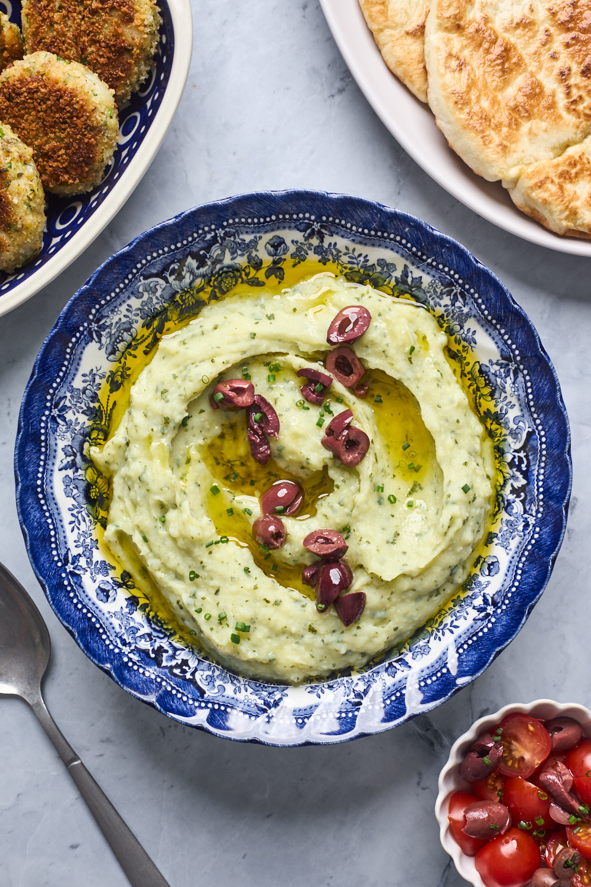

Best greek recipe!

Skordalia
Hearty, rich, and flavorful, skordalia is a must-try Greek dip!
This dish takes its name from one of its main ingredients, skordo, or garlic.
Ingredients
- 3 Garlic cloves or roasted garlic
- 1 lb Gold potatoes
- 1 Green onion
- 1 Lemon, Zest of
- 1 Parsley, Fresh
- 3/8 cup Lemon juice, fresh
- 1 Kosher salt
- 3/4 cup Greek extra virgin olive oil
- 3 oz Almonds
How do it?
- Prepare and cook potatoes
- Make the garlic and almond paste
- Mash the potatoes very well
- Combine potatoes with olive oil and garlic-almond paste
- Garnish and serve
Some other saucy greek recipes!